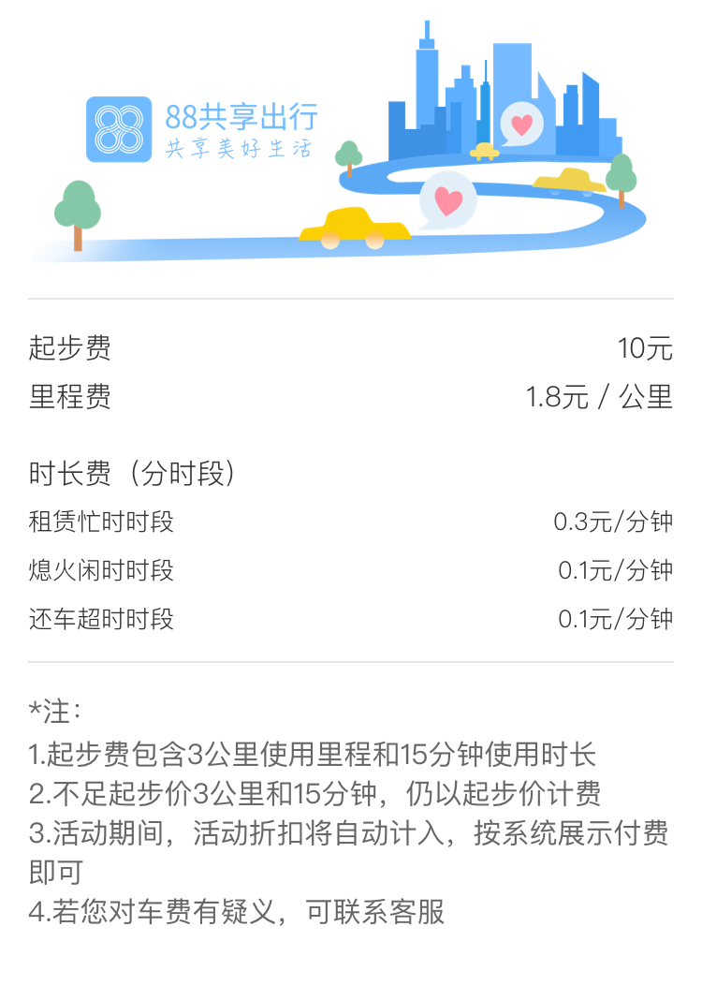

88共享出行租车服务协议（试行）
在您使用“88共享出行”租车服务之前，请认真阅读本委托服务协议内容。租车订单生效后，即表示您同意遵循本条款之所有约定。
第一条申明
1.1在您预约使用“88共享出行”租车服务之前，您已充分阅读、理解并接受本条款的全部内容。本协议在您租用88共享出行车辆时生效,将成为您和“88共享出行”之间具有法律意义的文件，您和“88共享出行”将同时受到本协议条款的约束。您应当对通过您的用户账号进行的所有租车活动和事件承担法律责任。
1.2本公司有权对本条款内容进行单方面的变更，并以在网站、APP等渠道公示的方式予以公布，享有公示效力，无需另行单独通知您;若您在本条款内容公告变更后继续使用本服务的,表示您已充分阅读、理解并接受修改后的条款内容，也将遵循修改后的条款内容使用本服务;若您不同意修改后的条款内容，您可选择停止使用本服务。
1.3您同意接受本条款并注册成为“88共享出行”用户。您是具有法律规定的完全民事权利能力和民事行为能力，能够独立承担民事责任的自然人。不具备前述条件的，您应立即终止注册或停止使用本服务。
1.4本服务协议内容包括协议正文及所有“88共享出行”已经发布或将发布的各类规则。所有规则为协议不可分割的一部分，与协议正文具有同等法律效力。
第二条定义
2.1“88共享出行”:指上海当地的“88共享出行”运营机构“上海佰享网络科技有限公司”为用户提供车辆分时共享服务的互联网技术平台，域名为:www.88gongxiang.com
2.2“88共享出行”服务是指接受注册用户委托服务后，“88共享出行”利用电脑、服务器、互联网、电话、移动设备等信息通讯设备，为注册用户快速定位寻找符合要求的小型客车租赁服务的整体服务过程。
2.3“授权驾驶人”:指“88共享出行”用户本人，年满18周岁以上，并具有有效证件。
2.4“付费”:指用户支付的所有款项，包括里程费，时长费，租车押金以及服务条款中规定的其他相关费用。
2.5“用户”：指申请并通过“88共享出行”审核的有效用户，指“88共享出行”服务的使用人。
2.6“共享使用期限”：指从用户确定用车时间到用户将汽车归还至合法停车位，并按“88共享出行”要求将车停放妥当，确认还车的期间。
2.7“预定时间”：是指用户与“88共享出行”预先约定的取车时间。
2.8“车辆”：指用户预定的“88共享出行”小型客车或“88共享出行”可能提供的任何替换车辆。
2.9“车辆状态”：指“88共享出行”车辆外观、市场价格、组件、配件、系统情况，汽车内外清洁程度等与车辆工作状态相关的情况。
第三条注册用户
3.1“88共享出行”用户可通过手机端应用市场下载“88共享出行”客户端后，进入用户注册页面，按要求填写注册信息，上传本人身份证以及驾照实物照片，完成用户注册过程。“88共享出行”用户资料审核通过且缴纳押金后，即可使用“88共享出行”的分时租车服务。
3.2用户进行注册时，必须填写准确、真实、有效的个人资料，如果提供的资料包含有不正确的信息,本平台保留结束用户使用网络服务资格的权利。倘若用户提供任何不真实、不准确、不完整或不能反映当前情况的资料，或“88共享出行”有合理理由怀疑该等资料不真实、不准确、不完整或不能反应当前情况，“88共享出行”有权暂停或终止您的注册身份及资料，并拒绝您在目前或将来对“服务”(或其任何部份)以任何形式使用。
3.3用户的用户名中不得包含违反国家法律法规、涉嫌侵犯他人权利或干扰“88共享出行”正常运营秩序等的相关信息：同一个用户名(同一驾驶证和身份证件)只能注册一个账号，并且验证该账号有效的手机号或邮箱未用于其它账号的验证。若发现反复注册用户的情况，此驾驶证和身份证件注册的所有账号将被禁止租用车辆。
3.4注册及使用“88共享出行”服务平台资格条件:
3.4.1符合法律规定的最低年龄要求;
3.4.2驾照有效并能够准驾自动挡车型,没有被吊销、没收、失效或以其它方式作废。
3.4.3如用户的驾照在任何时间被吊销、没收、失效或其状态发生变化，用户必须立即通知“88共享出行”，用户将不被批准使用或预定任何“88共享出行”车辆。若用户存在瞒报、迟报等行为在没有通知到“88共享出行”的情况下发生了任何事故都与“88共享出行”无关。
第四条所有权/无保证/汽车状态
4.1“88共享出行”用户明确汽车的所有权、受益权及处分权均归“88共享出行”所有，即使汽车被第三方拥有、登记或更名。用户同意按规定取得汽车，在使用前及使用后对汽车状态进行检查并立即报告任何损坏状况。“88共享出行”概不就汽车做出任何保证，无论是明示或默示的，包括任何关于汽车适用性或良好性的默示保证。如果用户在驾驶过程中确定汽车可能带来不安全，应立即停止使用汽车并联系“88共享出行平台”。
4.2用户不得以任何方式更改汽车状态。用户同意在还车时或在“88共享出行”所规定的情况下，将汽车以取得时的状态(自然磨损除外)归还至指定的停车地点。
第五条用户权益及义务
5.1用户享有使用“88共享出行”产品和服务的权益;
5.2用户资格仅限用户本人使用。
5.3用户租车时需遵守“88共享出行”的产品和服务规定，应如实提供“88共享出行”要求的相应证件(身份证、驾照等证件)。用户的资料发生变更(如工作变动、住址迁移、联系方式变动或单位名称变更、单位迁址等信息等)时，应及时通知“88共享出行”。
5.4“88共享出行”车辆用户不享有转租、转借、抵押、倒卖或其它任何损害车辆所有权和使用权的行为。“88共享出行”车辆不得承载有毒有害、易燃、易爆、易腐蚀品及违禁物品，不得酒后驾驶，不得从事违法、违规活动，不得在坏损或非正式路面上行驶，凡因上述原因造成车辆损坏或公安部门的扣车、对车主罚款等发生的一切费用和损失均由用户承担，如无故不承担相关费用，相应法律责任由用户承担。
5.5由于用户原因致使车辆牌照、车钥匙、证件等物品丢失，除支付补办相关物品的全部费用外，还应当支付补办相关物品期间给“88共享出行”造成的停运损失，停运损失费用由用户自行承担。用户若是将车上物品带走，请于客服通知后的12小时内将车上物品送回指定地点，否则将按照实际天数收取200元/天收取物品损失费用，单天超过12小时不足24小时，按照24小时计算。如无故不承担相关费用，相应法律责任由用户承担。
5.6用户用车期间需遵守交通规则，并注意自身安全。如因为危险停车和危险驾驶带来的一切损失由用户自身承担。
5.7用户在租赁期间对使用车辆所造成的侵权或违法及其他间接损失承担赔偿责任，如无故不承担相关费用，相应法律责任由用户承担。
5.8用户自行承担租期内租赁车辆的过路、过桥、停车、车辆电费等费用，自行负责车上人员及财产的安全。用户在使用“88共享出行”车辆时应当严格遵守道路交通规则，独立承担因交通事故产生的相关责任。
5.9如“88共享出行”车辆出现故障或异常、用户应立即通知“88共享出行”。用户不得擅自拆卸、更换原车设备及零件。
5.10由于因用户自身原因(如:驾驶习惯、误操作、保管不当、酒驾、超速驾驶、违规停车等)对车辆造成损失，应由用户承担相应及由此带来的一切损失，如无故不承担相关费用，相应法律责任由用户承担。
5.11如果携带不满4周岁的儿童乘坐机动车上路没有配备儿童安全座椅或末正确使用安全座椅的行为将被认定为交通违法行为。此期间因没有儿童安全座椅发生的任何事故与“88共享出行”平台无关
5.12未满14岁的未成年人不能坐在副驾驶位置。
第六条用户违约
6.1提供虚假信息，或盗用他人信息的;
6.2将汽车提供给任何非授权驾驶人驾驶;
6.3服用酒精、麻醉品或药物的驾驶人员，无论其是否在医生的指导下使用上述物品;
6.4未按约定用途使用车辆的;
6.5转卖、抵押、典当、转借、转租或确有证据证明可能存在上述情况时;
6.6不按协议约定交纳租金及各项费用、使用租赁车辆、保管租赁车辆、归还租赁车辆的;
6.7用户利用租赁车辆从事违法犯罪活动的;
6.8擅自改装、拆除、更换、增设车内配备的任何物品;
6.9利用任何方式方法危害“88共享出行”平台安全的;
6.10利用“88共享出行”或其提供的车辆，损害任何第三人合法权益的;
6.11将汽车行驶到任何没有铺设路面的土路上行驶或越野行驶，“88共享出行”以书面形式批准的除外;
6.12承载超出车辆核定限乘人数以外的乘客;
6.13恶意损害车内辅助行车设备;
6.14复制、发布含有下列内容信息的:
6.15危害国家安全，泄露国家秘密，颠覆国家政权，破坏国家统一;
6.16损害国家荣誉和利益;
6.17煽动民族仇恨、民族歧视，破坏民族团结;
6.18破坏国家宗教政策,宣扬邪教和封建迷信;
6.19散布谣言，扰乱社会秩序，破坏社会稳定;
6.20散布淫、色情、赌博、暴力、凶杀、恐怖或者教唆犯罪;
6.21恶意诋毁“88共享出行”的(包括在“88共享出行”平台，以及在其他任何地方);
6.22含有法律、行政法规禁止的其他内容;
用户出现上述违约责任情形，“88共享出行”有权解除协议，“88共享出行”可以不向用户发出通知的情况下，终止其使用汽车的权利和用户资格。“88共享出行”保留法律规定的权利，包括但不限于不经过法律程序向用户发出通知而扣押汽车，用户有义务支付所有“88共享出行”将汽车追回所发生的费用。在用户不按“88共享出行”要求归还车辆时，“88共享出行”有权利用备用的车辆钥匙将租赁车辆取回，对于车辆中的物品“88共享出行”有权留置或返还，由此而造成用户损失的，“88共享出行”不承担任何赔偿责任。同时，“88共享出行”有权向用户追责或索赔，此外，“88共享出行”有权追究当事人的法律责任。如果用户在使用权利终止后继续使用汽车，“88共享出行”有权通知公安机关车辆被盗并配合公安机关追回车辆。
第七条服务说明
7.1“88共享出行”网络服务的具体内容由“88共享出行”根据实际情况提供，“88共享出行”对其提供之服务拥有最终解释权。
7.2除非本服务协议另有其它明确规定，“88共享出行”在用户注册后所推出的新产品、新功能、新服务，均受到本服务协议之规范。
7.3鉴于网络服务的特殊性，用户同意“88共享出行”有权不经事先通知，随时变更、中断或终止部分或全部的网络服务(包括收费网络服务)。“88共享出行”不担保网络服务不会中断，对网络服务的及时性、安全性、准确性也都不作担保。
7.4“88共享出行”需要定期或不定期地对提供网络服务的平台或相关的设备进行检修或者维护，如因此类情况而造成网络服务(包括收费网络服务)在合理时间内的中断，“88共享出行”无需为此承担任何责任。“88共享出行”保留不经事先通知为维修保养、升级或其它目的暂停全部或部分的网络服务的权利。
7.5用户明确同意其使用“88共享出行”网络服务所存在的风险将完全由其自己承担。用户理解并接受下载或通过“88共享出行”服务而链接及得到的资讯、产品及服务均系“88共享出行”自动搜录，“88共享出行”对其合法性概不负责，亦不承担任何法律责任，用户自行承担风险，“88共享出行”不做任何形式的保证,不保证搜索结果满足用户的要求，不保证搜索服务不中断，对搜索结果的安全性、正确性、及时性、合法性均不做担保。
7.6“88共享出行”有权于任何时间暂时或永久修改或终止本服务(或其任何部分)，而无论其通知与否，“88共享出行”对用户和任何第三人均无需承担任何责任。
7.7终止服务:用户同意“88共享出行”有权基于其自行之考虑，因任何理由，包含但不限于长时间未使用，或“88共享出行”认为用户已经违反本协议的文字及精神，终止用户账号或本服务之使用(或服务之任何部分)，并将用户在本服务内任何内容加以移除并删除。用户同意依本协议任何规定提供之本服务,无需进行事先通知即可中断或终止，用户承认并同意，“88共享出行”可立即关闭或删除用户的账号及用户账号中所有相关信息及文件，及/或禁止继续使用前述文件或本服务。此外，用户同意若本服务之使用被中断或终止或用户的账号及相关信息和文件被关闭或删除，“88共享出行”对用户或任何第三人均不承担任何任。
第八条用户付费
8.1租车押金
8.1.1用户使用车辆前应通过线上支付(如:支付宝、微信、农商行支付、银联支付、信用卡)向“88共享出行”支付租车押金。
8.1.2用户不再使用“88共享出行”软件平台租用车辆时，可通过软件平台向“88共享出行”申请退还押金。在您最后一笔订单结算成功后30个工作日可以申请退款，“88共享出行”接受用户退还押金申请后，若在历次用车中未发现违章等行为，租车押金将于5个工作日完成退款，如遇节假日可能会延后。
8.1.3用户交还租赁车辆后，“88共享出行”将对车辆进行验收，确认车辆是否存在破损、刮蹭，内外机件、部件、饰件、设备是否存在损坏、缺失、脏污等情形，如线上验收时发现上述任一情况发生的，用户应当承担损害赔偿责任。
8.1.4用户在租车期间发生损坏、交通违章、交管部门处罚或因用户违规而导致租赁车辆被扣时，由用户方承担并支付罚款、停运和其他损失。“88共享出行”将违章信息通知用户，用户应在7天内及时处理违章并缴纳罚款，或者选择“88共享出行”平台代为处理，并需要支付一定的费用。因用户未及时处理违章、违规行为导致“88共享出行”受到损失的，“88共享出行”有权将押金锁定且将追究法律责任。
8.1.5用户押金为无息退还。
8.2用户在分时用车期间发生的费用:
计费方式:实际行驶公里+实际发生时间(分钟)。
8.2.1租期以1分钟为一个计量单位，租期小于1分钟的，按1分钟收取车辆租金，车辆租金为租车必付费用。
8.3.1根据预订时间，我们将为您免费保留15分钟取车时间，订单超过15分钟系统将自动取消。
8.3.2“88共享出行”采用更自由的还车模式，在还车围栏范围内的任何一个合法停车点即可还车。若在“88共享出行”指定免费停车位范围之外但在还车围栏范围内还车，将按照距离最近网点的直线距离收取还车服务费，5元/公里，25元封顶。若超出还车围栏范围，则无法进行还车操作。并有权取消违约用户的租车资质。
8.3.3超期未还车:租赁累计消费金额大于剩余租车押金后且优惠券账户余额不足以支付已租赁时间所产生的费用,“88共享出行”有权终止服务，进行回收车辆，同时用户须在24小时内支付本次租赁费用(本次租赁结束时间以终止服务时间为准)。
8.3.4用户恶意损害车内配置的任何物品，将视损坏程度按实际价值收取赔偿费用。
8.3.5违规费用:用户不得以任何方式将车辆提供给任何第三方驾驶，如用户执意操作并此车辆在行驶过程中出现事故，由此产生的后果/责任均由用户自行承担包括车辆损失及因维修造成的停运损失。
8.3.6以下2种情况，“88共享出行”将收取100元车辆内饰清洗费用:
a)车内有烟头、明显吸烟痕迹或其他明显大面积污渍;
b)车内有明显携带宠物痕迹或宠物毛发。
8.3.788车收费标准:

订单最长时间不能超过48小时。
根据市场需求，88共享平台会对收费标准、计费规则进行动态调整，具体收费以用户下单时APP展示信息为准。
第九条预订、取、还车说明
9.1预订说明:用户可以通过APP客户端方式来进行下单取车。
9.2取车说明:用户在预订取车豁免期(15分钟内)取车的，租期按车辆解锁车门起计费。
在24小时内，最多取消五次订单，且不收取任何费用，取消订单超过五次则在24小时内不能再租用车辆。
9.3用户取车前，应仔细检查确认车辆是否完好(包括但不限于检查车辆外观是否完好无损，车辆车窗户、车灯、车镜等是否有损毁，车辆轮胎是否有亏气、鼓包、起皮破损等异常问题，若发现车辆存在上述异常问题或存在有影响驾驶的，请不要驾驶该车辆离开并留存图像证据，同时点击页面底端左下角“特情上报”上传图像，否则即视为您提取的车辆完好无损。
9.4取车前，须先确认车辆油量是否满足本次出行里程要求，若油量不足，请先去加油站加油或不要选择该车辆，因用户未确定油量或因估算不足，造成行驶过程中油量耗尽引发的拖车救援费用以及由此造成的一切经济损失及法律责任均由用户承担。车辆的续航里程，表示在理想状况下可达公里数，实际续航里程会因温度、交通状况、驾驶习惯等因素不同。
9.5车辆(连同其钥匙和所有的附属物品，包括行驶本，手册，三脚架、灭火器、车贴，充电线等)必须一并归还，并且要保持和租用期间开始前一致的状况，如发生丢失或损坏需照价赔偿，相应产生的停运损失费及其它费用（包含但不限于）需一并赔偿。
9.6用户应在归还车辆时确保车内无任何个人财产，如还车时有任何用户的个人财产遗落在车中，所产生的相应责任由会员个人承担，“88共享出行”平台不承担任何责任。
第十条事故和报告/责任和赔偿
10.1基本保险。基本保险覆盖如下内容（具体赔偿范围及赔付金额以保险公司条款为准）（保险项目表格形式）
10.2基本保险不免除以下费用;
a.保险理赔范围外的，或因会员未履行有效报案流程、理赔手续而导致保险公司拒赔的;
b.因会员违法违规导致车辆波扣而产生的停运损失费。
10.3理赔说明
以下情况及其他保险公司不予赔偿的情况，造成的所有经济损失和后果将由会员自行承担:
a.自事故发生时起超过48小时报案;
b.饮酒、吸食毒品和/或服用管制类精神,麻醉药品后驾驶车辆;
c.无证驾驶车辆;
d.持逾期未审验的汽车驾照驾驶车辆;
e.事故发生后，在未依法果取措施的情况下驾驶被保险机动车或者遗弃被保险机动车离开
会员还车并提交齐全的理赔资料时，会员可能需要垫付拖车费用和费用支付。上述表明的保险责任内的由会员承担的损失,以及保险责任外的所有责任和损失垫付责任范围内的第三方损失并收取相关进保材料，该垫付费用将在保险公司完成理赔后返还给会员。
注:发生事故后，如果会员未按照88共享出行指导正确地进行报警、报案等进保手续或其他非88共享出行原因而导致保险公司拒绝理赔或无法理赔的，所有责任和损失(包括但不限于车辆损失、人身损害、财物损失)由会员自行承担。
10.4用车期间，若出现交通事故，则租客须遵循以下操作:
1.租客须第一时间报警并致电88共享出行客服，订单结束仍未报案的，则视为瞒报,保险不予赔付，责任由租客承担。
2.租客需对事故现场进行拍照，包括事故全景照片(车辆现场位置，碰攆痕迹、事故损失全貌),物证及特写照片(车牌号、受损部位、受损程度等),以便顺利获得保险公司的赔付。
3.租客需配合处理相关索赔事宜，包括且不限于车辆定损、第三方损失费用垫付、理赔手续办理等事宜，因租客过错造成理赔手续的缺失、证据毁灭等其它责任免除条款，88共享出行有权追讨损失及法律责任。
4.因用户操作不当造成的车辆故障、事故，以及违规使用导致车辆被扣或证件丢失或证件被扣或证件借用处理违章或无法年检等情形而影响车辆正常运营的，88共享出行按照车辆时租金与实际停运天数向会员收取经营损失费，若会员拒付，88共享出行不予退还押金或预授权并有权继续索赔。计费方式:200元x停运天数
10.5车辆损失费按照实时定损计价，起步费中包含不计免赔金额500元，超出500元部分需用户补付。或者用户可在平台中选择另买其他种类不计免赔保险金额，车损超出部分仍需补付。若用户在15日内未完成支付则需承担一定法律责任。
10.6对保险责任以外的原因造成的事故损失以及保险不能理赔的事故损失项目，由会员全额承担。
10.7如果车辆在租用期内(或在服务期以外的，会员仍然占有或负责车辆的任何时段)被盗，会员必须在得知情况后尽快电话通知“88共享出行”和警方并配合“88共享出行”进行后续处理。
10.8车辆发生重大事故导致车辆严重损坏的，保险公司定损超过1万元或实际维修费用超过1万元的，会员应向88共享出行车支付超出部分20%的费用作为车辆加速折旧费。
10.9会员在使用车辆期间，发生车辆事故(特指保险理赔范围内的事故)88共享出行将按保险理赔次数向会员收取保险上浮费，标准为单次300元。
10.10会员对于在汽车使用期间发生任何保险理赔的问题，有责任全力配合“88共享出行”和保险公司的工作。未能立即报告事故和配合事故调查，会员承担全部责任和费用。
10.11用户不得隐瞒租赁期内车辆发生的意外事故。如发生事故，用户应及时通知“88共享出行”客服中心(021-22011427)，并及时向当地公安机关及保险公司报案，以便“88共享出行”协助处理保险理赔事宜。
10.12用户承租车辆期间发生交通事故，须到“88共享出行”指定的地点进行修理,在用户有责任的情况下，修理费由用户先行垫付;用户若拒绝垫付而导致“88共享出行”产生相应的停运损失，费用将由用户承担。用户垫付的费用中保险公司理赔金额，在保险公司赔付款到账后“88共享出行”在30个工作日内返还给用户。
10.13在用户有责任的情况下须在事故结案一个月内如实提供事故证明、交通管理部门出具的事故责任认定书、事故调解书、损失清单以及有关修理费用等单据。涉及人员伤亡的，用户应在保险公司规定的期限内提交判决书等相应单据。否则，视为用户自愿放弃索赔权益并承担相关损失。
10.14在用户有责任的情况下承担一切超出保险公司理赔和/或保险公司拒绝理赔部分的费用，用户该项赔付义务不因各方合作的终止而灭失。若涉及第三方责任，双方应互相协助保险公司追讨应由第三方承担的费用。
10.15租赁车辆发生各类机件故障、事故车修复，应当到“88共享出行”指定的修理厂进行修理。反之，用户应当支付由此造成的修理费用及(复原)返修费用和返修期间“88共享出行”的停运损失费用(200元/天)。由此给“88共享出行”或第三方造成其他损失的，用户应予赔偿。
10.16“88共享出行”向租车用户提供“7X24小时”的救援服务。用户遇到紧急情况，可致电24小时用户服务中心021-22011427。
10.17非车辆本身故障导致无法正常行驶的(包含且不限于人为操作失误、保险事故等)，救援费用由用户承担(保险公司承担除外)。用户出现无法正常行驶问题时，请用户立刻联系客服，不可使用非“88共享出行”提供的道路救援服务。
10.18因用户租赁过程中发生事故(车辆自身故障除外)，车辆维修周期超过3天，停运天数按车辆实际维修天数计算，停运损失费按200元/天进行计算，上限30天。
10.19因违法违规驾驶导致车辆被扣的，停运天数按车辆实际被扣押天数计算，停运损失费按200元/天进行计算。
10.20用户在租赁期间发生丢失证照、丢失钥匙需要补办等，为“88共享出行”造成直接损失和间接损失的，导致车辆无法正常运营的“88共享出行”均按200元/天收取停运损失费用。
第十一条交通违章处理
11.1“88共享出行”在收到交警或其他渠道对车辆的违章通知后，会马上进行用户确认。在确认该违章在用户的用车时间段内的情况下，“88共享出行”将立即通知用户。用户应在接到通知起7天内自行前往银行或交警支队处理。如用户超过7天未处理,，将被视为用户自动委托“88共享出行”处理相关违章，同时“88共享出行”有权采取必要措施，并保留追究法律责任及善后处理的一切权利。
11.2因还车停放位子产生的违章及罚款，由所行驶至停车位停放用户承担，若用户拒绝承担，“88共享出行”有权采取必要措施，并保留追究法律责任及善后处理的一切权利。
11.3“88共享出行”有权在违章用户账户内扣除违章罚款等同金额及每次违法行为所产生的损失费用。对于吊销驾照的严重交通违法行为，“88共享出行”不接受委托处理。
第十二条补救措施的限制
12.1“88共享出行”在任何情况下对用户的唯一责任以及对用户的唯一补救措施仅限于由“88共享出行”向用户另行提供一辆类似的汽车的用车服务，并按比例退回用户没有使用预定车辆或替代车辆期间按小时计算的用车费用。用户放弃所有针对“88共享出行”的间接、惩罚性和附带损害的索赔权利。
第十三条附则
13.1“88共享出行”有权随时修改本协议的任何条款，包括用户服务计划中的任何规定或终止当年用户服务计划，即修改或终止会影响用户积分或者其他权利。一旦本协议的内容或用户服务计划发生变动，“88共享出行”将会在平台上公布和使用此次修改后的协议内容和服务内容，该公布和使用行为视为“88共享出行”已就其修改内容通知用户。
13.2无论租赁行为发生与否，如有突发状况、行程核实、信息核实、追责、风控(包含但不限于以上情况)等情况发生时，用户为第一责任人，“88共享出行”同时有权追究连带责任人法律责任及善后处理的一切权利。
13.3如果不同意“88共享出行”对本协议相关条款所做的修改,用户有权停止使用服务。如果用户继续使用服务，则视为用户接受“88共享出行”对本协议相关条款所做的修改。
13.4本条款的订立、执行和解释及争议的解决均应适用中国法律。
13.5如双方就本条款内容或其执行发生任何争议,双方应尽力友好协商解决;协商不成时，任何一方均可向“88共享出行”服务总部所在地的人民法院提起诉讼。